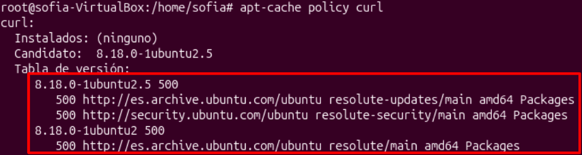
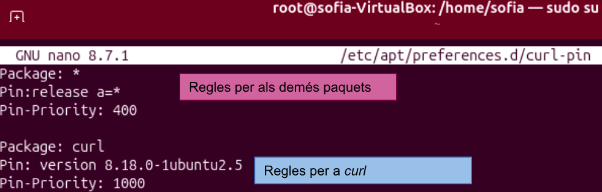
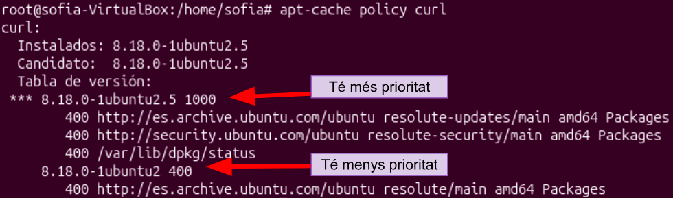
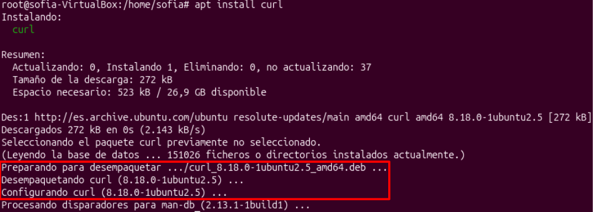

1. Pinning Packet
Pas 1: Comprovació de l’estat APT
Primer executem la comanda apt-cache policy curl per veure les versions que estan disponibles.

Portada / Índex de sprints / Sprint 1
Índex d'apartats d'aquest sprint
| # | Apartat |
|---|---|
| 1 | Instal·lació SO |
| 2 | Punts de restauració |
| 3 | Llicències |
| 4 | Virtualització |
| 4 | Gestors arrancada |
| 4 | Xarxa bàsica |
| 4 | Comandes generals |
| 4 | Instal·lacions aplicacions |
Primer executem la comanda apt-cache policy curl per veure les versions que estan disponibles.

En aquest cas instal·larem curl que serveix per descarregar o pujar arxius a internet a través de URL.
Primer crearem un arxiu on definirem les regles perquè s’ens descarregui la versió més nova, amb la
comanda nano /etc/apt/preferences.d/curl-pin.

Al fer apt-cache policy curl podrem veure que la versió que hem especificat tindrà més prioritat que les demés.

Al fer apt install curl començará l’instal·lació de la versió indicada.
